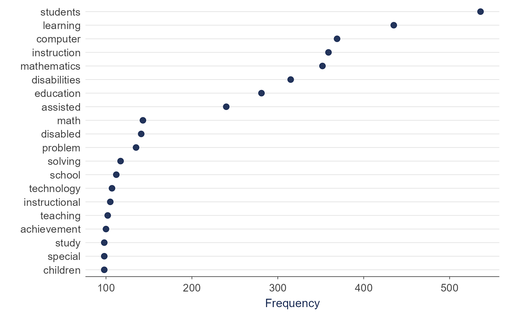
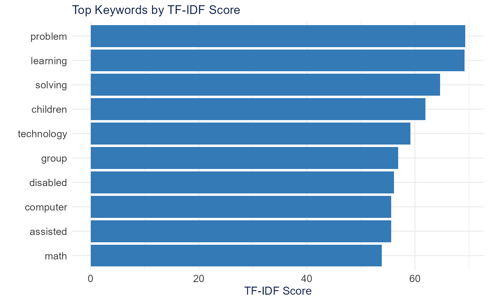
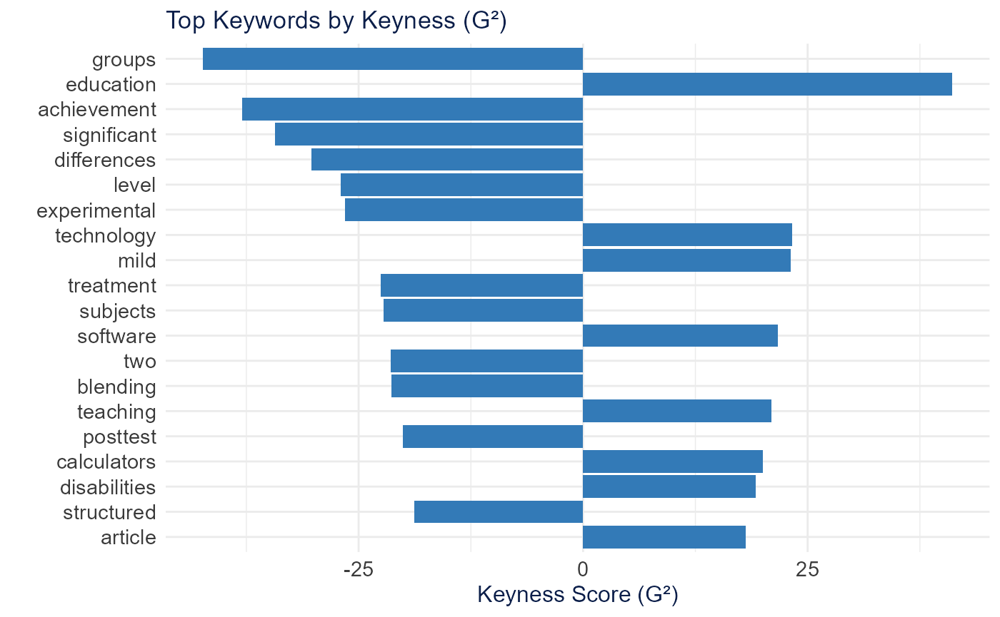
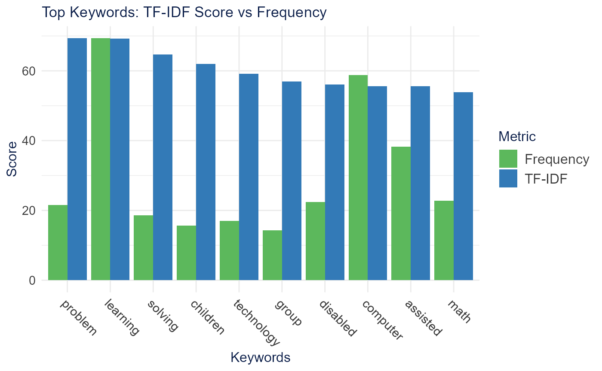
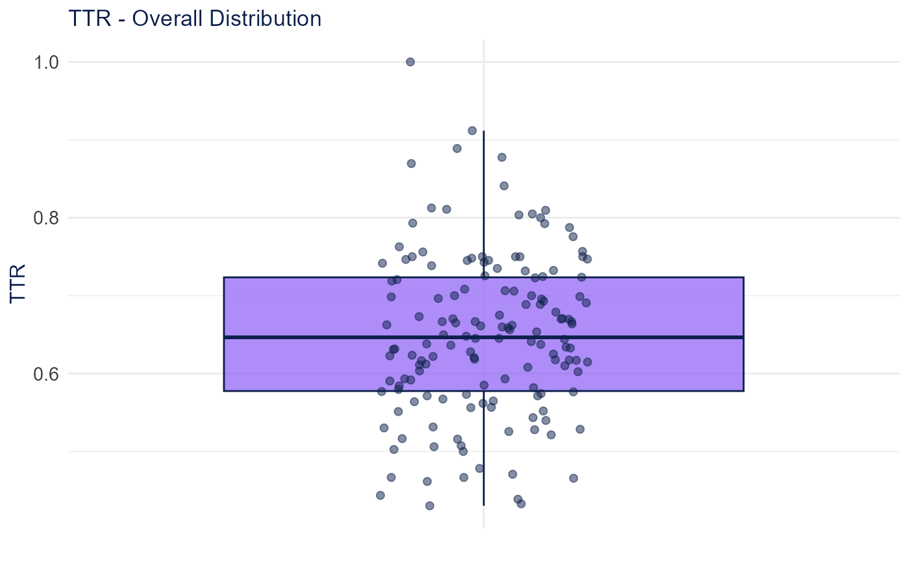
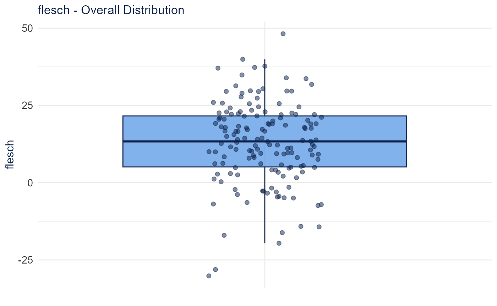
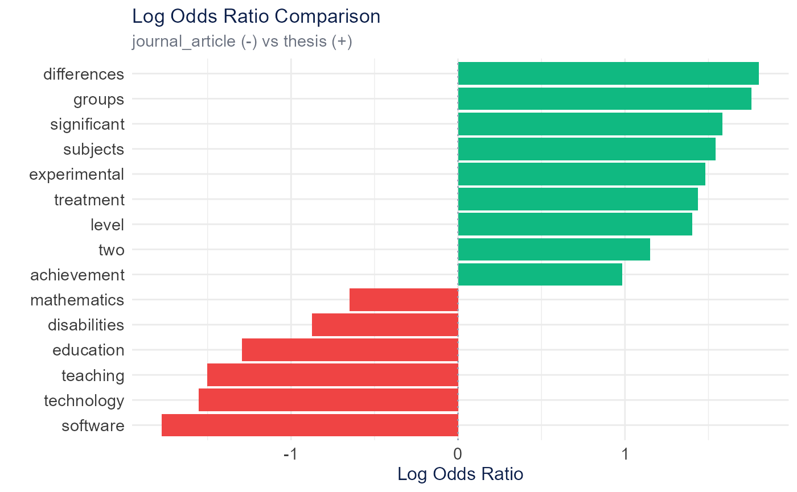
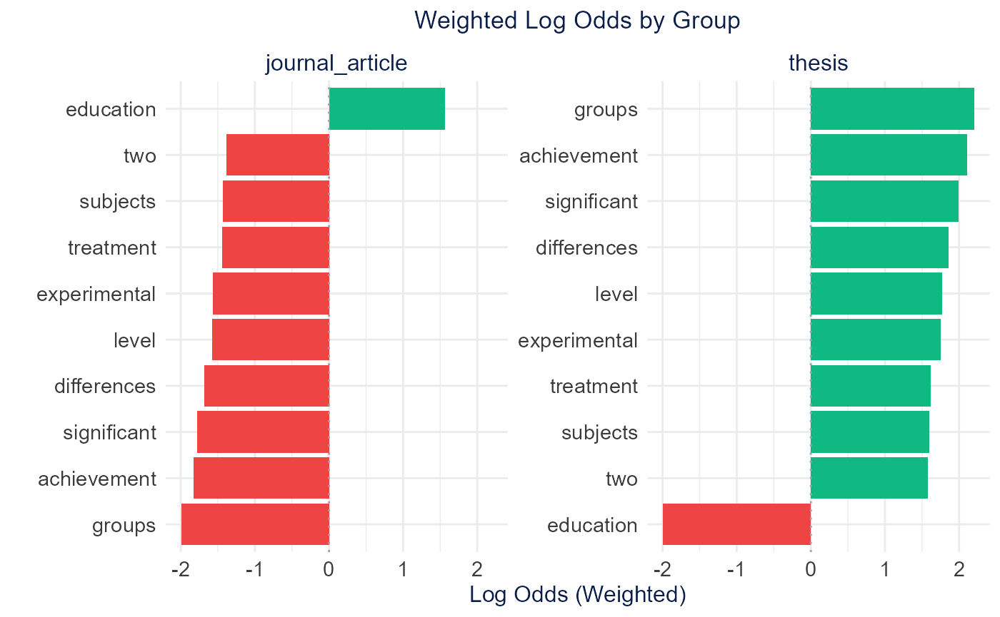
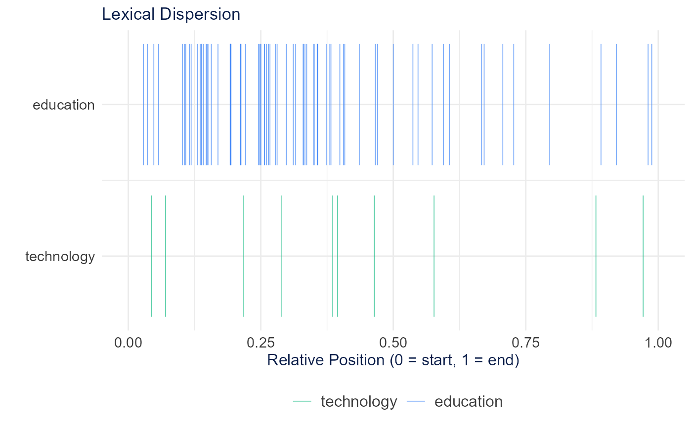

Lexical analysis examines word patterns, distinctiveness, and complexity. The sections below follow the Shiny app’s Lexical Analysis tabs in order.
Setup
A 150-document subset of SpecialEduTech keeps the build
fast; the full dataset works the same way.
library(TextAnalysisR)
mydata <- SpecialEduTech[1:150, ]
united_tbl <- unite_cols(mydata, listed_vars = c("title", "keyword", "abstract"))
tokens <- prep_texts(united_tbl, text_field = "united_texts", remove_stopwords = TRUE)
dfm_object <- quanteda::dfm(tokens)Linguistic Annotation
Token-level annotation (lemmas, part-of-speech, morphology, dependencies, named entities) uses spaCy through reticulate, so the examples below require Python and are not run here.
Part-of-Speech Tags
extract_pos_tags() returns one row per token with
doc_id, token, lemma, pos, tag. Universal POS tags include
NOUN, VERB, ADJ, ADV (content words), PROPN (proper nouns), and DET,
ADP, PRON (function words).
pos <- extract_pos_tags(united_tbl$united_texts)Morphological Features
extract_morphology() extracts grammatical features such
as Number (Sing/Plur), Tense (Past/Pres/Fut), VerbForm, Person, and
Case.
morphology <- extract_morphology(united_tbl$united_texts)Named Entity Recognition
extract_named_entities() tags entities such as PERSON,
ORG, GPE/LOC, and DATE/MONEY/PERCENT.
entities <- extract_named_entities(united_tbl$united_texts)Frequency Trends
plot_word_frequency() shows the most frequent terms in
the document-feature matrix.
plot_word_frequency(dfm_object, n = 20)
Keywords
TF-IDF
extract_keywords_tfidf() weights terms that are frequent
in a document but rare across the corpus, surfacing distinctive
vocabulary.
keywords <- extract_keywords_tfidf(dfm_object, top_n = 10)
plot_tfidf_keywords(keywords)
Statistical Keyness
extract_keywords_keyness() identifies terms that
distinguish one group from the rest using a log-likelihood (G^2)
statistic.
keyness <- extract_keywords_keyness(
dfm_object,
target = quanteda::docvars(dfm_object, "reference_type") == "journal_article"
)
plot_keyness_keywords(keyness)
Comparison
plot_keyword_comparison() places TF-IDF scores next to
term frequency for the top keywords.
plot_keyword_comparison(keywords, top_n = 10)
Lexical Diversity
lexical_diversity_analysis() reports vocabulary-richness
indices. MTLD, MATTR, and HDD are stable across text lengths; TTR and
CTTR are length-sensitive.
diversity <- lexical_diversity_analysis(dfm_object)
plot_lexical_diversity_distribution(diversity$lexical_diversity, metric = "TTR")
| Metric | Description | Note |
|---|---|---|
| TTR | Types / Tokens | Length-sensitive |
| CTTR | Types / sqrt(2 × Tokens) | Partly length-corrected |
| MATTR | Moving-average TTR | Stable across lengths |
| MTLD | Mean length maintaining TTR | Length-independent |
| HDD | Hypergeometric sampling probability | Length-independent, needs 42+ tokens |
| Maas | Log-based index | Lower = more diverse |
Readability
calculate_text_readability() computes grade-level and
reading-ease indices from sentence and word structure.
readability <- calculate_text_readability(united_tbl$united_texts)
plot_readability_distribution(readability, metric = "flesch")
| Metric | Basis | Output |
|---|---|---|
| Flesch Reading Ease | Sentence length + syllables | 0-100 (higher = easier) |
| Flesch-Kincaid | Sentence length + syllables | Grade level |
| Gunning Fog | Sentence length + complex words | Years of education |
| SMOG | Polysyllabic words | Years of education |
| ARI | Characters per word | Grade level |
| Coleman-Liau | Letters per 100 words | Grade level |
Log Odds Ratio
calculate_log_odds_ratio() compares word odds between
categories using a Dirichlet-smoothed log-odds ratio to find distinctive
vocabulary.
log_odds <- calculate_log_odds_ratio(
dfm_object,
group_var = "reference_type",
comparison_mode = "binary",
top_n = 15
)
plot_log_odds_ratio(log_odds)
calculate_weighted_log_odds() weights the ratio by a
z-score (Monroe et al.), so reliably distinctive terms rank above rare
terms with extreme ratios (uses the tidylo package).
weighted_odds <- calculate_weighted_log_odds(
dfm_object,
group_var = "reference_type",
top_n = 15
)
plot_weighted_log_odds(weighted_odds)
Lexical Dispersion
calculate_lexical_dispersion() shows where selected
terms appear across documents (an X-ray plot).
dispersion <- calculate_lexical_dispersion(tokens[1:50], terms = c("education", "technology"))
plot_lexical_dispersion(dispersion)
Multi-Word Expressions
Multi-word (n-gram) detection belongs to the Preprocess →
Multi-Word Dictionary step in the app.
detect_multi_words() returns a collocations table to feed
quanteda::tokens_compound().
compounds <- detect_multi_words(tokens, min_count = 10)
head(compounds, 10)## [1] "learning disabilities" "assisted instruction" "computer assisted"
## [4] "problem solving" "special education" "learning disabled"
## [7] "elementary school" "students learning" "school students"
## [10] "high school"